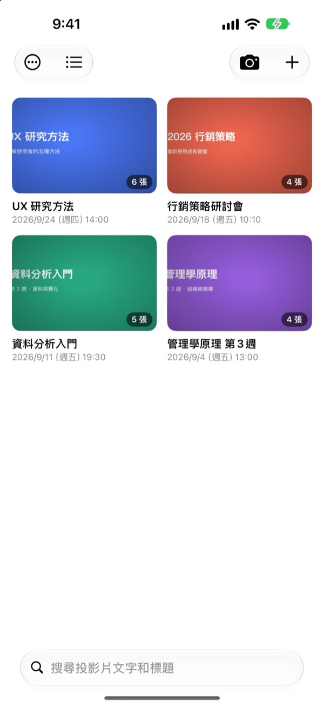
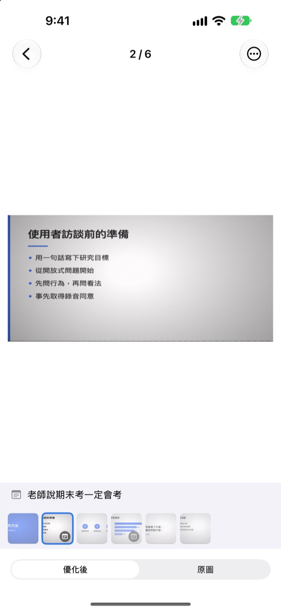
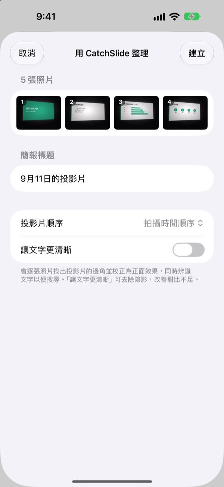
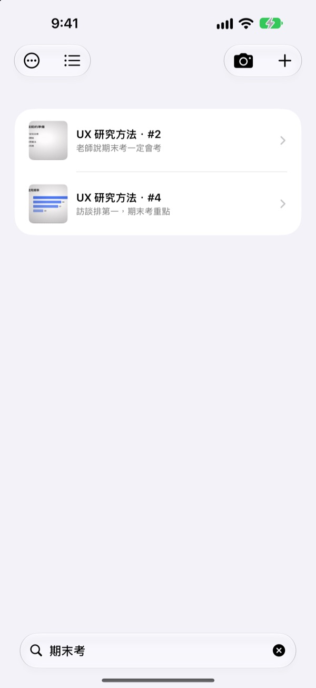

坐在旁邊拍，
存下的卻是正面
相機會找出投影片的四個角，把畫面拉正，並裁掉周圍的背景。連續拍下的投影片會自動歸到同一份簡報。
買一次就能用所有功能。不用訂閱，也不用註冊帳號。

親手拉正一張
這是在教室側邊座位斜著拍的照片。綠色線框就是找到的投影片四個角。
想複習時翻遍相簿，卻找不到那張投影片？
後排拍的投影片總是歪的，還夾在自拍和收據中間。教室一安靜，連快門聲都讓人不好意思按。CatchSlide 靜音拍攝、自動拉正，再依簡報幫你收好。
按下的那一刻就是正的
相機即時追蹤投影片的四個角，對準時會變成綠色。就算斜著拍，也能校正成正面視角，並裁掉背景。
拍照沒有快門聲。開啟自動拍攝後，每換一張就自動拍下，晃到的照片會自動略過。

以前拍的照片，也能一次匯入
在「照片」App 裡選幾張上課的照片，分享到 CatchSlide，就會依拍攝順序拉正，整理成一份簡報。
開啟讓文字更清晰，還能去除陰影，讓灰濛濛的畫面變清楚。

記得一個詞，就找得到
CatchSlide 會在裝置上辨識每張投影片的文字。過了好幾週，憑一個詞也能找回那一張。
每張投影片留下的筆記也搜得到。寫上期末考，考試範圍一搜就全部出來。

三個步驟就能開始
- 1
打開相機
從列表的相機按鈕、主畫面小工具或鎖定畫面都能打開。
- 2
把投影片框進畫面
四個角變綠後按下快門，或交給自動拍攝。
- 3
依簡報回顧
搜尋、寫筆記，再匯出複習用 PDF。
一份簡報能做的事
- 錄音
- 邊拍邊錄，打開某張投影片時，會從拍下那一張的時刻開始播放
- 逐字稿
- 把錄音轉成文字，依投影片顯示當時講了什麼，也能拿來搜尋
- AI 摘要
- 根據投影片文字和逐字稿整理整份簡報的重點（需支援 Apple Intelligence 且執行 iOS 26 以上的裝置）
- 每頁放 1 張、2 張或 4 張投影片的複習用 PDF
- Markdown
- 可直接放進 Notion 或 Obsidian 的 .zip
- PowerPoint
- 匯出成 .pptx，逐字稿放在講者備忘稿
- 合併簡報
- 選幾份簡報，合成一份
- iCloud 同步
- 開啟後，同一個 Apple ID 的其他裝置也能看到你的簡報。預設為關閉
- 小工具
- 在主畫面和鎖定畫面直接打開相機
文字辨識、逐字稿和 AI 摘要都在裝置上處理。
買一次，所有功能都有
CatchSlide
- 靜音拍攝、自動拍攝、自動拉正
- 從「照片」App 一次匯入多張
- 依簡報整理，搜尋文字和筆記
- 錄音、逐字稿、AI 摘要
- 匯出 PDF、Markdown、PowerPoint
- iCloud 同步和小工具
小費（自由）
- 如果這個 App 幫上忙，可以給開發者一點小費
- 小費不會解鎖任何功能，不給也能使用所有功能
可在「我的資訊」畫面給小費。
沒有訂閱，也沒有要額外付費才能解鎖的功能。價格請以 App Store 顯示為準。
常見問題
要怎麼拍投影片？
打開相機，把投影片對進畫面，四個角就會變成綠色，這時按下快門即可。開啟自動拍攝後，每換一張就會自動拍下一張。
拍照會有快門聲嗎？
不會。它是直接儲存相機畫面，所以在任何國家使用都是靜音。
為什麼好幾張會歸到同一份簡報？
距離上一張不到 5 分鐘就接著拍，會被視為同一份簡報。在列表點標題可以改名，被拆開的簡報可以用合併簡報合成一份。
可以匯入之前拍的照片嗎？
可以。在「照片」App 選幾張，從分享按鈕選擇 CatchSlide；或點列表的 ＋，選從照片匯入。照片會依拍攝順序拉正，整理成一份簡報。
四個角抓得不對怎麼辦？
打開那張投影片，在 ⋯ 選單選調整邊角，拖曳四個角重新對齊。也可以用自動偵測重新尋找，或用整張圖片保留整張照片。原圖會一直保留，隨時都能重新校正。
可以搜尋投影片裡的文字嗎？
在列表上方的搜尋欄輸入關鍵字，就會從投影片文字、簡報標題、筆記和逐字稿裡找，並直接跳到那一張。文字辨識在裝置上完成。
要怎麼匯出 PDF？
在簡報裡打開分享選單，選匯出為 PDF，再選每頁 1 張、2 張或 4 張的版面。接著可以在分享表單存到「檔案」，或傳到其他 App。
要怎麼調整順序或刪除投影片？
在簡報裡長按投影片並拖曳，就能調整順序。長按跳出的選單可以刪除或分享單張，用選取可以一次刪除多張。
錄音和 AI 摘要怎麼用？
開啟相機畫面上方的錄音再拍，每張投影片都會附上當時的聲音。在簡報筆記點用 AI 產生摘要，會根據投影片文字和逐字稿整理簡報重點。AI 摘要只能在支援 Apple Intelligence 且執行 iOS 26 以上的裝置使用。
我的投影片和錄音存在哪裡？
全部存在你的裝置上。只有在「我的資訊」開啟同步時，才會上傳到你自己的 iCloud，也不需要註冊帳號。詳情請參閱隱私權政策。
有任何問題、錯誤回報或功能建議，歡迎寄信到 leeo@kakao.com。